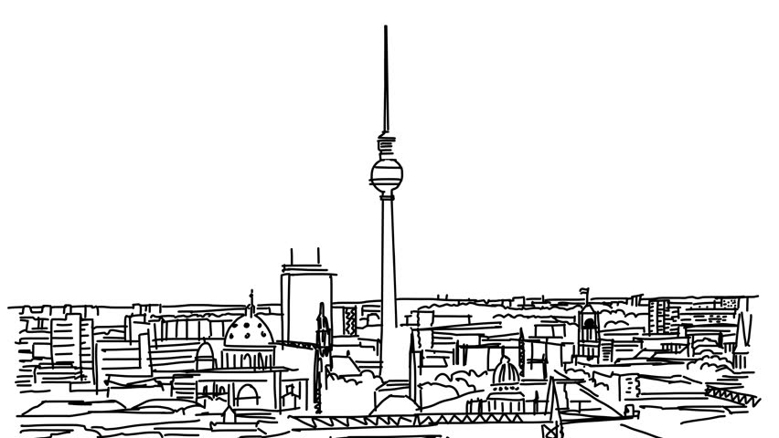
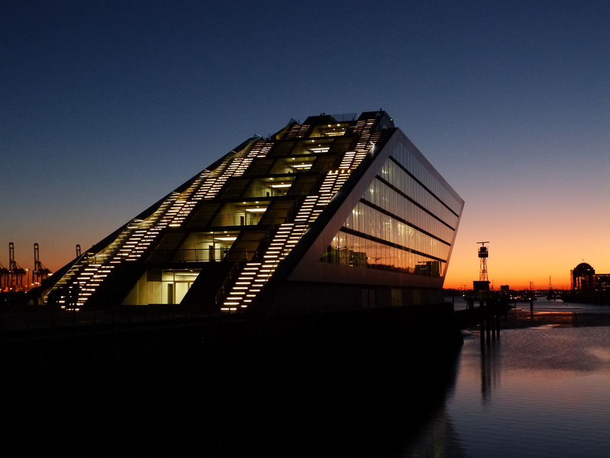
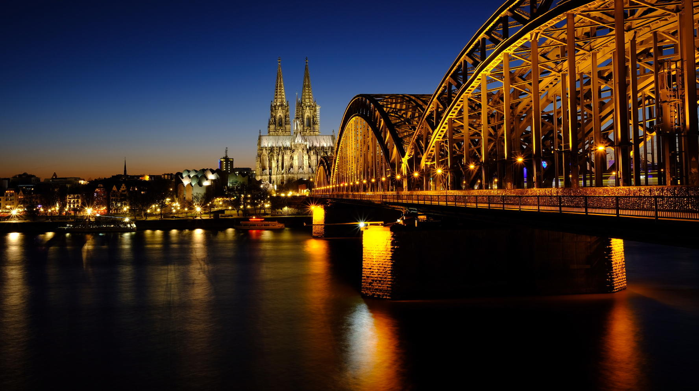
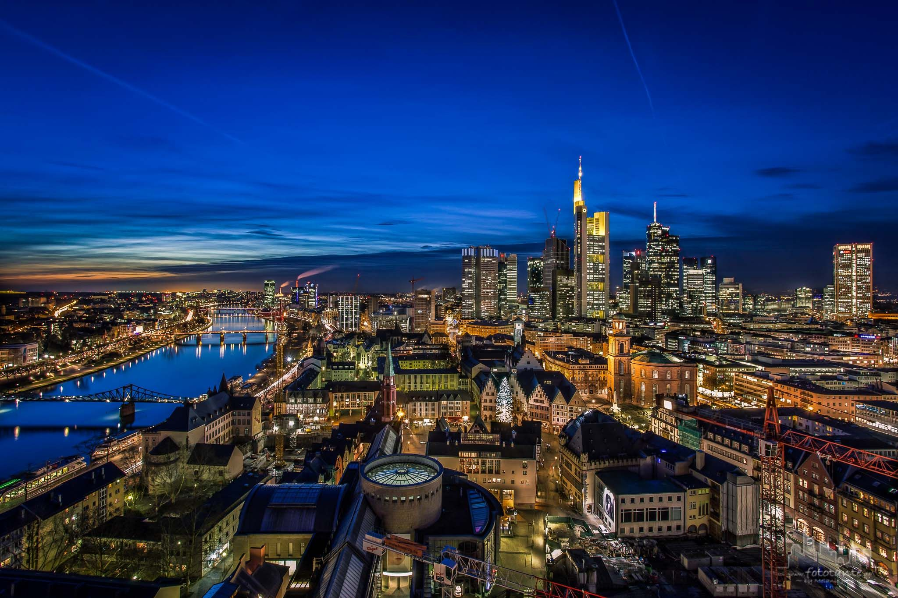

Germany
Biggest Cities
BERLIN

Population3,520,031
HAMBURG

Population1,787,408
MUNICH

1,450,381
In the 1920s, Munich became home to several political factions, among them the NSDAP. The first attempt of the Nazi movement to take over the German government in 1923 with the Beer Hall Putsch was stopped by the Bavarian police in Munich with gunfire. After the Nazis' rise to power, Munich was declared their "Capital of the Movement". During World War II, Munich was heavily bombed and more than 50% of the entire city and up to 90% of the historic centre were destroyed. After the end of postwar American occupation in 1949, there was a great increase in population and economic power during the years of Wirtschaftswunder, or "economic miracle". Unlike many other German cities which were heavily bombed, Munich restored most of its traditional cityscape and hosted the 1972 Summer Olympics.
Cologne

Population1,060,582
Cologne is a major cultural centre for the Rhineland; it hosts more than 30 museums and hundreds of galleries. Exhibitions range from local ancient Roman archeological sites to contemporary graphics and sculpture.
Frankfurt am Main

Population732,688
A few facts
| Capital | Berlin | ||
|---|---|---|---|
| Official language | German | ||
| Ethnic groups | 80.8% Germans
11.7% Other Europeans 4.9% West Asians --3.4% Turks --1.3% Arabs 1.3% Other Asians 0.6% Africans 0.5% Americans 0.1% Other |
||
| Religion | 59.3% Christianity
34.4% Irreligion 5.5% Islam 0.8% Other religions |
||
| Government | Federal parliamentary republic | ||
| President | Frank-Walter Steinmeier | ||
| Chancellor | Angela Merkel | ||
| Area -total | 357.386km2 | ||
| Population | 83.000.000 | ||
| Currency | Euro(€) |